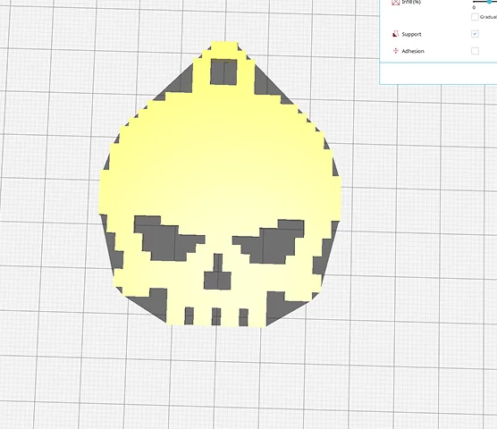
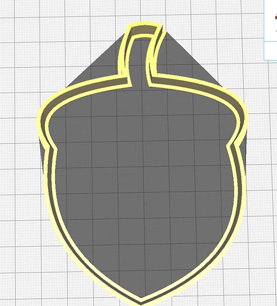
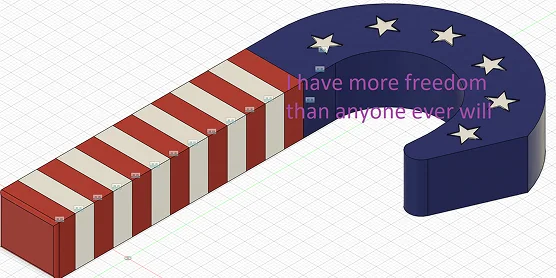
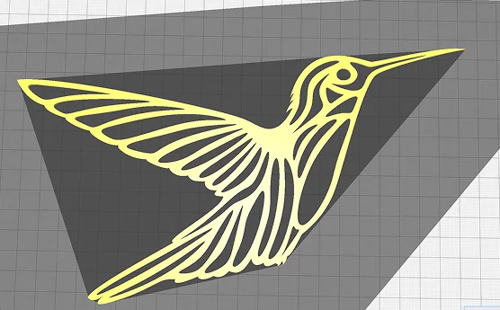
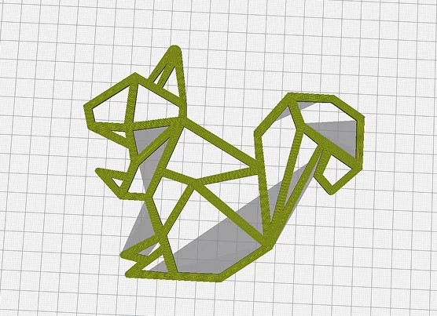
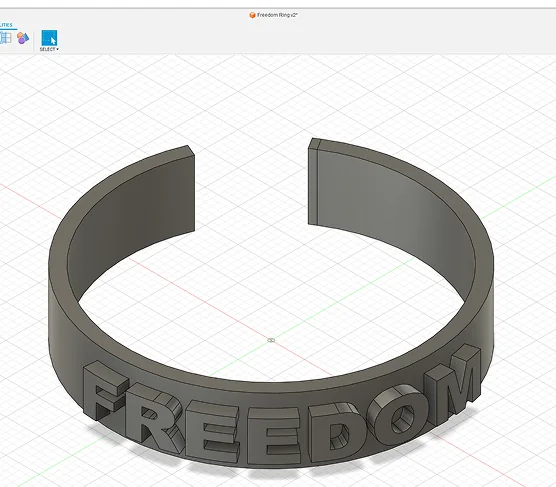
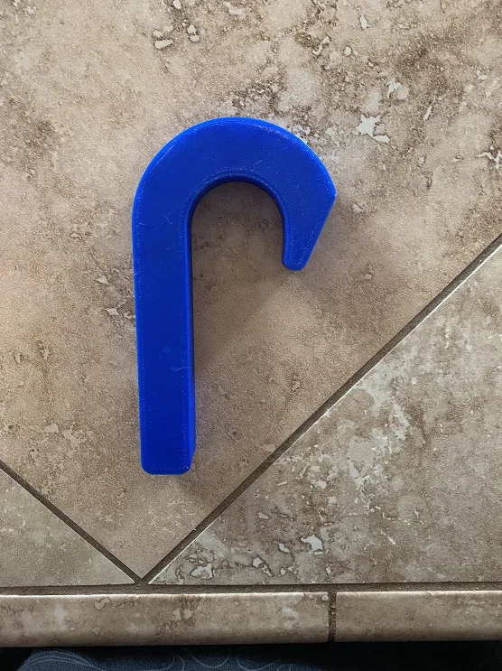
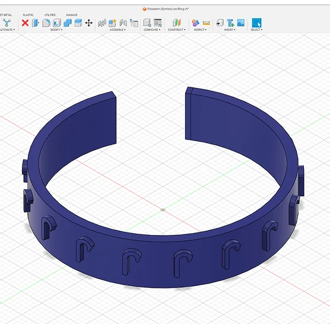
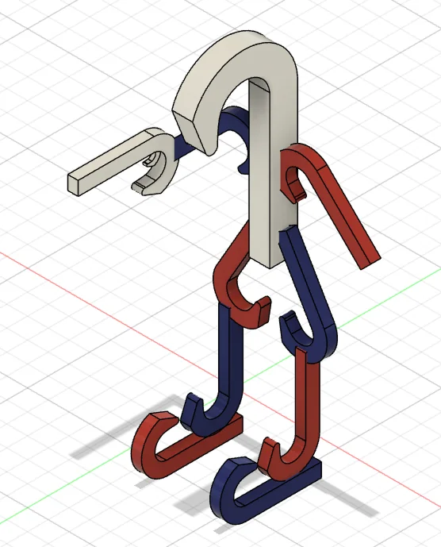

My gamertag closely resembles a skull, and I wanted to show it off. Thanks to the EMR (Engineering, Manufacturing, and Robotics) lab at CART, I was able to model this in Fusion 360.

One of my neighbors likes squirrels so I ended up making her an acorn. Later I made her a 2d Squirrel.

In the EMR lab at CART, we had these little ‘candy canes’. These candy canes are called Freedom Tags. If you wanted to listen to music as you worked, you had to go to the back of the class and request one of these freedom tags. The ones we were given were solid colors such as Blue, Green, or Red. I took the name ‘Freedom’ to a whole new level and made one that closely resembles the American flag.

My mom likes hummingbirds so I found a reference image of a drawing, then traced over it. When I was at the end of the build, I realized that there was already a model of the hummingbird out there. I took inspiration from that as well and came up with this.

This is the squirrel I talked about earlier.

Back to things related to Freedom, this is a Freedom Ring. It’s self-explanatory. It’s a ring that has the words ‘Freedom’ written on it.

I took the dimensions from one of EMR’s Freedom Tags and upscaled it to be 6 inches instead of the regular inch ones they would give us.

Yet another Freedom ring. This time, it has the little freedom symbols on it.

I call this Mr. Freedom. He is created using nothing but freedom tags. It took a few months to create the hub because I had to learn how to first create the Freedom tag, then how to color each component, and finally, how to move and attach things to one another.